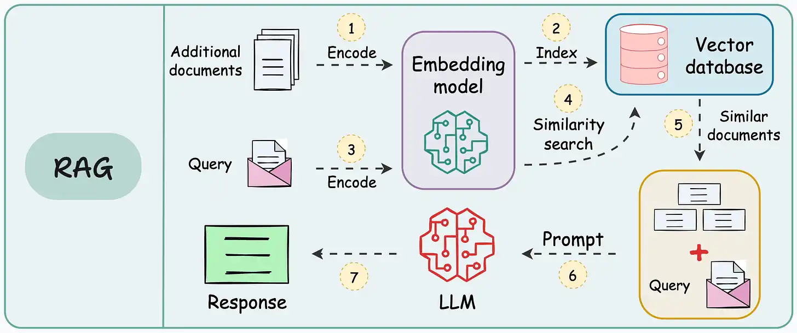

# Mount Google Drive
from google.colab import drive
drive.mount('/content/drive')Drive already mounted at /content/drive; to attempt to forcibly remount, call drive.mount("/content/drive", force_remount=True).


This lecture introduces Retrieval-Augmented Generation (RAG), a technique for grounding the responses of Large Language Models (LLMs) in external sources of information. We will first explain the main components of RAG systems, and then implement two RAG pipelines in Python: the first is built step by step using Hugging Face libraries for embedding, retrieval, and generation, and the second uses the LlamaIndex framework.
Retrieval Augmented Generation (RAG) refers to the use of external sources of information for improving the generated responses by LLMs. RAG allows LLMs to retrieve facts from external sources (e.g., Wikipedia, news articles, local documents) and provide responses that are more accurate and/or are up-to-date.
In general, the internal knowledge of LLMs is static, as it is fixed by the date of the used training dataset. Therefore, LLMs cannot answer questions about current events, and they are stuck in the time moment of their training data. Updating LLMs with knowledge about current events requires to continuously retrain the models on new data. Such a process is very expensive, as it requires collecting updated datasets and finetuning the model to update the weights.
RAG enables to avoid expensive LLMs retraining, by retrieving information from external databases to generate responses. The RAG approach involves two major phases:
Instead of relying only on the information contained in the training dataset used for training an LLM, RAG provides an interface to external knowledge to ensure that the model has access to the most current and reliable facts. E.g., in an enterprise setting, external sources of information for RAG can comprise various company-specific files, documents, and databases. Employing RAG can result in more relevant responses and it can reduce the problem of hallucination by LLMs. It also allows the users to review the sources that were used by LLMs and verify the accuracy of generated responses. However, RAG systems have also limitations, which include potential retrieval of irrelevant or outdated documents, increased response latency due to the retrieval step, and dependency on the quality and coverage of the external knowledge sources.
An overview of a RAG system is depicted in the figure. The provided examples that follow demonstrate two different ways to implement RAG systems.

Figure: RAG system. Source: [1].
In this example, we will implement a RAG system in Python using the Hugging Face library for model loading and response generation.
As an external text source, we will use a Wikipedia article on LLMs available at https://en.wikipedia.org/wiki/Large_language_model . The article has been pre-processed by extracting the main text content, removing sections with equations, and removing references. The cleaned text is saved in a plain text file named wikipedia_llm.txt.
We will build a RAG system that allows us to answer queries about the article.
First, we mount Google Drive and import the required libraries. Most are standard, except for sentence_transformers that is a Hugging Face library that is used to load an embedding model, and facilitate creating vector embeddings for sentences, paragraphs, or documents.
Next, we load the document wikipedia_llm.txt, which is uploaded in the course folder for Lecture 21 on my Google Drive.
# Mount Google Drive
from google.colab import drive
drive.mount('/content/drive')Drive already mounted at /content/drive; to attempt to forcibly remount, call drive.mount("/content/drive", force_remount=True).# Import libraries
import torch
import numpy as np
import pandas as pd
import re
from transformers import AutoTokenizer, AutoModelForCausalLM
from sentence_transformers import SentenceTransformer# Path to the file uploaded on Google Drive
file_path = 'drive/MyDrive/Data_Science_Course/Fall_2026/Lectures/Lecture_21-RAG/data/wikipedia_llm.txt'
# Load the text file
with open(file_path , 'r') as f:
text = f.read()# Print the text content of the article
text[:1000]'=== Introduction ===\nA large language model (LLM) is a language model trained with self-supervised machine learning on a vast amount of text, designed for natural language processing tasks, especially language generation. The largest and most capable LLMs are generative pre-trained transformers (GPTs) and provide the core capabilities of chatbots such as ChatGPT, Gemini and Claude. LLMs can be fine-tuned for specific tasks or guided by prompt engineering. These models acquire predictive power regarding syntax, semantics, and ontologies inherent in human language corpora, but they also inherit inaccuracies and biases present in the data they are trained on.\nThey consist of billions to trillions of parameters and operate as general-purpose sequence models, generating, summarizing, translating, and reasoning over text. LLMs represent a significant new technology in their ability to generalize across tasks with minimal task-specific supervision, enabling capabilities like conversational ag'To prepare the document for embedding, we need to split the text into smaller chunks. RAG systems typically work with text chunks because source documents may be too long and exceed the LLM context window. Also, smaller chunks lead to more accurate embeddings, and provide more precise context for query answering.
There are several different ways of creating chunks. A common approach is to split text based on token count, where for instance, every chunk can contain 300 tokens. Since this Wikipedia article is already divided into sub-sections, we will use one sub-section per chunk.
The following function chunk_by_section does exactly that, using the == text markers to identify top-level headers and split the text into chunks.
# Function to split text into chunks (each sub-section is one chunk)
# The code in this cell is not required in preparation for quizzes
def chunk_by_section(wiki_text):
# Find all top-level headers and their content
pattern = re.compile(r'(==\s*[^=].*?==)\s*(.*?)(?=(?:==\s*[^=].*?==)|\Z)', re.S | re.M)
matches = pattern.findall(wiki_text)
chunks = []
pending_headers = []
for header, content in matches:
if content.strip():
# If there are header-only sections, prepend them to non-empty sections
if pending_headers:
combined_header = "\n".join(pending_headers + [header])
chunk = (combined_header + content).strip()
pending_headers = []
else:
chunk = (header + content).strip()
chunks.append(chunk)
else:
pending_headers.append(header)
return chunks# Call the function to create chunks
chunks = chunk_by_section(text)Note that there are 53 text chunks in total. The first 5 chunks are displayed in the pandas DataFrame below.
# Print the number of chunks in the article
print(f"Created {len(chunks)} chunks")Created 53 chunks# Create a pandas dataframe using the chunks
df = pd.DataFrame({"chunk_id": range(len(chunks)), "text": chunks})
# Show the first 5 chunks
df.head(5)| chunk_id | text | |
|---|---|---|
| 0 | 0 | == Introduction ===\nA large language model (L... |
| 1 | 1 | == History ===\nBefore the emergence of transf... |
| 2 | 2 | == Tokenization ===\nAs machine learning algor... |
| 3 | 3 | == Byte-pair encoding ===\nAs an example, cons... |
| 4 | 4 | == Tokenization: Problems ===\nA token vocabul... |
To perform RAG, we first need to create embeddings for all text chunks. In this example, we use the Qwen3-Embedding-0.6B model. Each text chunk is passed through this embedding model, and an embedding vector was calculated for each of the 53 chunks. As we can notice, each embedding vector has 1,024 elements.
# Load the embedding model
embed_model = SentenceTransformer('Qwen/Qwen3-Embedding-0.6B')# Create embeddings for all text chunks
chunk_embeddings = embed_model.encode(chunks, prompt_name="query")# Check the shape of chunk embeddings
print(f"Shape of created embeddings: {chunk_embeddings.shape}")Shape of created embeddings: (53, 1024)The next step involves finding the most relevant chunks for a given query. We first obtain an embedding vector for the given query using the same model Qwen3-Embedding-0.6B. This results in an 1,024 dimensional embedding vector.
# A test query
query = "What is a mixture of experts"# Create a vector embedding for the query
query_embedding = embed_model.encode([query], prompt_name="query")[0]# Print the shape of the embedding
query_embedding.shape(1024,)The next cell calculates cosine similarity between the query embedding and the embedding for each chunk. As you may recall, cosine similarity for two vectors \(u\) and \(v\) is calculated as \(\dfrac{u\cdot v}{||u||\cdot ||v||}\).
# Calculate similarity between the query embedding and each chunk embedding
# cosine similarity = dot_product(u,v) / norm(u)*norm(v)
similarities = np.dot(chunk_embeddings, query_embedding)
similarities = similarities / (np.linalg.norm(chunk_embeddings, axis=1) * np.linalg.norm(query_embedding))# Print the shape of similarities
similarities.shape(53,)There are 53 similarity scores since there are 53 text chunks. By sorting the similarity scores, we found that the embeddings for chunks 12, 45, and 15, are the closest to the embedding vector for the query.
# Find the indices for the top 3 most similar chunks
top_indices = np.argsort(similarities)[-3:][::-1]
top_indicesarray([12, 45, 15])In the next cell, the top 3 text chunks are printed. We see that the first chunk has a similarity score of 0.740 and it is the most relevant to the question. Notice that the sub-section header is “Mixture of experts” and it directly relates to the posed question “What is a mixture of experts”. The second and third chunks have much lower similarity scores (0.248 and 0.247) and are less relevant.
print(f"Results\n")
for i in top_indices:
print(f"Similarity score: {similarities[i]:.3f}:\nText Chunk: {chunks[i][:1000]}")Results
Similarity score: 0.740:
Text Chunk: == Mixture of experts ===
A mixture of experts (MoE) is a machine learning architecture in which multiple specialized neural networks ("experts") work together, with a gating mechanism that routes each input to the most appropriate expert(s). Mixtures of experts can reduce inference costs, as only a fraction of the parameters are used for each input. The approach was introduced in 2017 by Google researchers.
=
Similarity score: 0.248:
Text Chunk: == Sycophancy and glazing ===
Sycophancy is a model's tendency to agree with, flatter, or validate a user's stated beliefs rather than to prioritize factuality or corrective information, and "glazing" is an emergent public shorthand for persistent, excessive agreeability observed across multi-turn interactions and productized assistants.
Continued sycophancy has led to the observation of getting "1-shotted", denoting instances where conversational interaction with a large language model produces a lasting change in a user's beliefs or decisions, similar to the negative effects of psychedelics, and controlled experiments show that short LLM dialogues can generate measurable opinion and confidence shifts comparable to human interlocutors.
Empirical analyses attribute part of the effect to human preference signals and preference models that reward convincingly written agreeable responses, and subsequent work has extended evaluation to multi-turn benchmarks and proposed interventions such
Similarity score: 0.247:
Text Chunk: == Extensibility ===
Beyond basic text generation, various techniques have been developed to extend LLM capabilities, including the use of external tools and data sources, improved reasoning on complex problems, and enhanced instruction-following or autonomy through prompting methods.
=The final step in RAG uses the results from the Retrieval phase, and performs response generation. In this example, we use Qwen3-0.6 LLM for response generation. Note that this model is different from Qwen3-Embedding-0.6B that we used for chunk embedding. Also note than the model is loaded with AutoModelForCausalLM since the task to perfom is casual language modeling. Loaded with the model is the corresponding tokenizer as well.
# Load Qwen3 language model and tokenizer
lm_model_name = "Qwen/Qwen3-0.6B"
tokenizer = AutoTokenizer.from_pretrained(lm_model_name)
lm_model = AutoModelForCausalLM.from_pretrained(lm_model_name, pad_token_id=tokenizer.eos_token_id)Let’s use only the top chunk to generate an answer, since it was the most relevant for the query. We assign it to the name context.
Afterward, we create a message for chat template that contains “system” and “user” roles. The system message below is quite general. The user message prepends the retrieved context (i.e., the most relevant text chunk) to the query. This ensures that LLM has access to the text chunk and use the information when generating the answer to the query.
context = chunks[top_indices[0]]
context'== Mixture of experts ===\nA mixture of experts (MoE) is a machine learning architecture in which multiple specialized neural networks ("experts") work together, with a gating mechanism that routes each input to the most appropriate expert(s). Mixtures of experts can reduce inference costs, as only a fraction of the parameters are used for each input. The approach was introduced in 2017 by Google researchers.\n\n\n='# Create messages for chat template
messages = [{"role": "system", "content": "You are a helpful assistant answering questions."},
{"role": "user", "content": f"""Use this context: {context} to answer the following question: {query}"""}]The next cell applies the chat template for Qwen3-0.6B to the messages. Notice that the formatted prompt has the tags for instruction message start and end <|im_start|> and <|im_end|> added to the text, to match the expected format for Qwen3-0.6B.
Shown below also is the tokenized prompt with input_ids and attention_mask keys and corresponding values.
# Apply chat template to build the prompt
prompt = tokenizer.apply_chat_template(messages, tokenize=False, add_generation_prompt=True)
# Diplay formatted prompt
prompt'<|im_start|>system\nYou are a helpful assistant answering questions.<|im_end|>\n<|im_start|>user\nUse this context: == Mixture of experts ===\nA mixture of experts (MoE) is a machine learning architecture in which multiple specialized neural networks ("experts") work together, with a gating mechanism that routes each input to the most appropriate expert(s). Mixtures of experts can reduce inference costs, as only a fraction of the parameters are used for each input. The approach was introduced in 2017 by Google researchers.\n\n\n= to answer the following question: What is a mixture of experts<|im_end|>\n<|im_start|>assistant\n'# Tokenize the prompt
inputs = tokenizer(prompt, return_tensors="pt").to(lm_model.device)
inputs{'input_ids': tensor([[151644, 8948, 198, 2610, 525, 264, 10950, 17847, 35764,
4755, 13, 151645, 198, 151644, 872, 198, 10253, 419,
2266, 25, 621, 386, 12735, 315, 11647, 2049, 198,
32, 20980, 315, 11647, 320, 25612, 36, 8, 374,
264, 5662, 6832, 17646, 304, 892, 5248, 27076, 29728,
14155, 3489, 4580, 15546, 899, 975, 3786, 11, 448,
264, 73399, 16953, 429, 11291, 1817, 1946, 311, 279,
1429, 8311, 6203, 1141, 568, 19219, 18513, 315, 11647,
646, 7949, 44378, 7049, 11, 438, 1172, 264, 19419,
315, 279, 5029, 525, 1483, 369, 1817, 1946, 13,
576, 5486, 572, 11523, 304, 220, 17, 15, 16,
22, 553, 5085, 11811, 4192, 28, 311, 4226, 279,
2701, 3405, 25, 3555, 374, 264, 20980, 315, 11647,
151645, 198, 151644, 77091, 198]]), 'attention_mask': tensor([[1, 1, 1, 1, 1, 1, 1, 1, 1, 1, 1, 1, 1, 1, 1, 1, 1, 1, 1, 1, 1, 1, 1, 1,
1, 1, 1, 1, 1, 1, 1, 1, 1, 1, 1, 1, 1, 1, 1, 1, 1, 1, 1, 1, 1, 1, 1, 1,
1, 1, 1, 1, 1, 1, 1, 1, 1, 1, 1, 1, 1, 1, 1, 1, 1, 1, 1, 1, 1, 1, 1, 1,
1, 1, 1, 1, 1, 1, 1, 1, 1, 1, 1, 1, 1, 1, 1, 1, 1, 1, 1, 1, 1, 1, 1, 1,
1, 1, 1, 1, 1, 1, 1, 1, 1, 1, 1, 1, 1, 1, 1, 1, 1, 1, 1, 1, 1, 1, 1, 1,
1, 1]])}The tokenized prompt inputs is then passed to the model using model.generate to produce a response.
# Generate response by the model
outputs = lm_model.generate(**inputs, max_new_tokens=500, temperature=0.1, top_p=0.95, do_sample=True, pad_token_id=tokenizer.eos_token_id)# Decode generated tokens to text
response = tokenizer.decode(outputs[0], skip_special_tokens=True)The entire LLM response is shown below. It contains the system message, the user prompt with the context and query, and the model’s generated answer.
response'system\nYou are a helpful assistant answering questions.\nuser\nUse this context: == Mixture of experts ===\nA mixture of experts (MoE) is a machine learning architecture in which multiple specialized neural networks ("experts") work together, with a gating mechanism that routes each input to the most appropriate expert(s). Mixtures of experts can reduce inference costs, as only a fraction of the parameters are used for each input. The approach was introduced in 2017 by Google researchers.\n\n\n= to answer the following question: What is a mixture of experts\nassistant\n<think>\nOkay, so the user is asking, "What is a mixture of experts?" and provided some context. Let me start by reading through the context again to make sure I understand it correctly.\n\nThe context says: "A mixture of experts (MoE) is a machine learning architecture in which multiple specialized neural networks (\'experts\') work together, with a gating mechanism that routes each input to the most appropriate expert(s). Mixtures of experts can reduce inference costs, as only a fraction of the parameters are used for each input. The approach was introduced in 2017 by Google researchers."\n\nSo, the main points here are that MoE involves multiple experts working together, each handling a part of the input, using a gating mechanism to decide which expert to use, reducing parameters, and introduced by Google in 2017.\n\nThe user wants to know what a mixture of experts is. The answer should be concise, using the information from the context. I need to make sure to mention the key components: multiple experts, gating mechanism, reducing parameters, and the introduction by Google in 2017. Also, check if there\'s any other details I might have missed, but from the context, that\'s all. So the answer should be a clear definition based on the given information.\n</think>\n\nA mixture of experts (MoE) is a machine learning architecture where multiple specialized neural networks (experts) work together, with a gating mechanism that selects the most appropriate expert for each input. This approach reduces inference costs by using only a fraction of the parameters for each input, as introduced by Google researchers in 2017.'Let’s extract only the text generated by the LLM. It is shown below, and it correctly answers the posed question “What is a mixture of experts”.
# Extract the LLM answer only
answer = response.split("<|im_start|>assistant")[-1].split("</think>")[-1].strip()
answer'A mixture of experts (MoE) is a machine learning architecture where multiple specialized neural networks (experts) work together, with a gating mechanism that selects the most appropriate expert for each input. This approach reduces inference costs by using only a fraction of the parameters for each input, as introduced by Google researchers in 2017.'This examples uses LlamaIndex, which is an advanced framework that facilitates LLMs integration with diverse data sources. LlamaIndex supports knowledge retrieval from over 100 data formats, including PDFs, websites, Word documents, SQL databases, and much more. Besides tools for data retrieval, LlamaIndex offers built-in functions that make RAG implementation quite simple.
For this example, we will use a single MS Word file as the external data source. The file is in fact the syllabus for the CS 4622/5622 Applied Data Science with Python course.
Let’s first install the required packages for llama_index and import the required modules.
# Note that this line requires to Restart the kernel (Runtime > Restart Session) and run it one more time
!pip install -q llama_index llama_index_core llama-index-embeddings-huggingface docx2txtfrom llama_index.embeddings.huggingface import HuggingFaceEmbedding
from llama_index.core import Settings, SimpleDirectoryReader, VectorStoreIndex
from llama_index.core.retrievers import VectorIndexRetriever
from llama_index.core.query_engine import RetrieverQueryEngine
from llama_index.core.postprocessor import SimilarityPostprocessor
from llama_index.core.node_parser import SimpleNodeParser
from transformers import AutoModelForCausalLM, AutoTokenizerLet’s mount the drive and enter the path to the directory where the syllabus document is stored. LlamaIndex offers SimpleDirectoryReader that loads and parses documents in a directory. Specifically, it finds all files in the directory, loads each file as a separate Document object, and cleans the text. In this case, we have only one document (the course syllabus) in the directory, but in a real-world case, many documents are used for building RAG applications.
# Mount Google drive
from google.colab import drive
drive.mount('/content/drive')Drive already mounted at /content/drive; to attempt to forcibly remount, call drive.mount("/content/drive", force_remount=True).# Path to the Google Drive directory where the syllabus is uploaded
file_path = 'drive/MyDrive/Data_Science_Course/Fall_2026/Lectures/Lecture_21-RAG/data/data_example2'
# Load and parse documents in the directory
documents = SimpleDirectoryReader(file_path).load_data()
print(len(documents))1The function SimpleNodeParser in LlamaIndex splits the text into chunks, referred to here as nodes. Notice that we set the chunks to have approximately 180 tokens, and also there is an overlap of 20 tokens. I.e., the second chunk contains the last 20 tokens from the first chunk. The overlapped tokens help to capture continuity so that the information retrieval is not broken at the chunk boundary. Since this is a short document, there are only 7 chunks, and the first text chunk is shown below.
# Create parser to split the document into text chunks (nodes)
parser = SimpleNodeParser.from_defaults(chunk_size=180, chunk_overlap=20)
# Apply the parser to convert the loaded documents to chunks
nodes = parser.get_nodes_from_documents(documents)
# Print the number of chunks
print("Number of chunks:", len(nodes))Number of chunks: 7print(nodes[0].text)CS 4622/5622 – Applied Data Science with Python
Semester: Fall 2025 (August 25 – December 19)
Credit Hours: 3
Instructor: Alex Vakanski, vakanski@uidaho.edu
Office Location: TAB 311, Idaho Falls Center (zoom link available on Canvas)
Course Delivery Methods:
Virtual meetings (live meetings, students participate through Zoom)
Classroom (live meetings,The next cell defines to use bge-small-en-v1.5 as a model for embedding the text chunks. The model is loaded from HuggingFace.
The cell afterward builds a vector store from the text chunks (nodes). This involves computing an embedding vector for each text chunk using the BGE model, storing all vectors into a vector database, and assigning a retrieval index to the embeddings.
In the examples covered in this lecture we work with only one document for demonstration purposes. The two presented examples contained 7 and 53 text chunks, and we can easily store them as list in the memory. However, in real-world RAG applications with many documents, there are large number of text chunks. There may be thousands or millions of vector embeddings, and storing and searching is more challenging.
In such cases, vector embeddings are typically stored into a vector store (or vector database). It is a database designed to store and search vector embeddings that represent text, images, audio, or other data. You can think of a vector database in simple terms as an SQL database that instead of data contains hihg-dimensional vector embeddings. It allows to perform fast similarity search over embeddings, and returns the closest matching vectors for a query. There are many vector databases available, ranging from free open-source to commercial products, offering local and cloud-based solutions.
# Load the embedding model
Settings.embed_model = HuggingFaceEmbedding(model_name="BAAI/bge-small-en-v1.5")
# Don't use a default LLM yet, we will define it later
Settings.llm = NoneLLM is explicitly disabled. Using MockLLM.# Index documents using vector store
index = VectorStoreIndex(nodes)LlamaIndex offers VectorIndexRetriever which, as it sounds, creates a retriever object that uses the vector index to search for relevant chunks and retrieves the top-1 chunk based on the setting for similarity_top_k in this case.
Next, a query engine is defined with RetrieverQueryEngine, that uses the retriever object to return the relevant text for the query.
# Configure retriever
retriever = VectorIndexRetriever(index=index, similarity_top_k=1)# Create a query engine
query_engine = RetrieverQueryEngine(retriever=retriever)For content generation, we will again use Qwen3-0.6B LLM, as in the first example.
The next cell below defines a generation pipeline with the generate_response function. The steps are almost identical to Example 1 above, with the exception of the first two lines that call the defined query_engine and extract the text for the most relevant text chunk.
model_name = "Qwen/Qwen3-0.6B"
# Load model
model = AutoModelForCausalLM.from_pretrained(model_name, trust_remote_code=False, device_map="cuda:0")
# Load tokenizer
tokenizer = AutoTokenizer.from_pretrained(model_name, use_fast=True)def generate_response(query):
# Retrieve the relevant text
retrieval = query_engine.query(query)
# Extract the text for the most relevant node
context = retrieval.source_nodes[0].text
# Create messages for chat template
messages = [{"role": "system", "content": "You are a helpful assistant answering questions. Use the provided context to answer questions."},
{"role": "user", "content": f"""Based on this context: {context}, please answer the following question: {query}"""}]
# Apply chat template to build the prompt
prompt = tokenizer.apply_chat_template(messages, tokenize=False, add_generation_prompt=True)
# Tokenize the prompt
inputs = tokenizer(prompt, return_tensors="pt").to(model.device)
# Generate response by the model
outputs = model.generate(**inputs, max_new_tokens=500, temperature=0.1, top_p=0.95, do_sample=True, pad_token_id=tokenizer.eos_token_id)
# Decode generated tokens to text
response = tokenizer.decode(outputs[0], skip_special_tokens=True)
# Extract the LLM answer only
answer = response.split("<|im_start|>assistant")[-1].split("</think>")[-1].strip()
# Print the final answer by the LLM
print(answer)Now, we can call the generate_response function and query the model based on course information provided in the syllabus.
generate_response("What is the evaluation strategy")The evaluation strategy combines assignments, quizzes, and class participation to assess student performance. Each component contributes to a total of 100, indicating a structured approach to evaluating learning outcomes.generate_response("How many marks are assigned for homework assignments")The number of marks assigned for homework assignments is **45**.generate_response("What is the instructor's email address")The instructor's email address is **vakanski@uidaho.edu**.